LLM Benchmarks for Researchers
For social science and business research, the most valuable data is often locked inside dense, scanned documents like financial filings, census tables, and newspaper pages. Digitizing these sources has traditionally meant slow, manual transcription, often handed to students or outsourced labor to copy out cell by cell.
Large Language Models (LLMs) offer a powerful alternative to manual data extraction, but using them for research raises a more fundamental question: how do you know a model is reliable enough for your specific documents and research question? Strong results on one example aren't enough. You need a structured way to measure whether a model performs consistently before building any analysis on its output.
What this article covers
This article will focus on how to design LLM benchmarks for research-related data extraction and provide examples from our own implementation. For additional context you can reference our Hub How-To and our GitHub.
Our Data
Throughout this article we'll use one type of image as an example: historical newspaper pages containing printed TV Guides, dense, grid-shaped program schedules. We chose them as a stand-in for other tabular historical documents (census records, financial ledgers, etc.) because they share the hard parts: small fonts, mixed scan quality, and layouts that shift from one paper to the next.
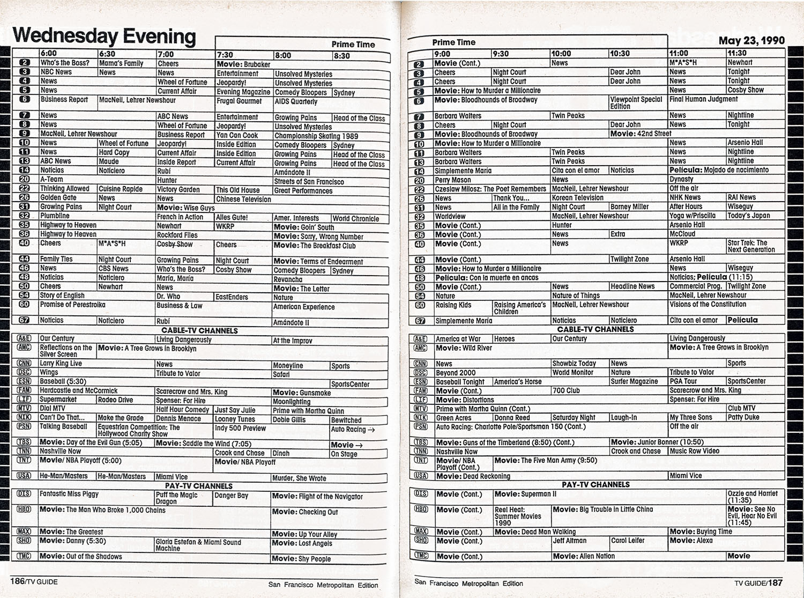
Designing Benchmarks
Why You Need a Benchmark
A model might perform perfectly on a single document but still fail across your full dataset due to variability in layout, font size, and resolution. You need a benchmark: a standardized measure of how different LLMs perform specific tasks across a representative sample of your data.
For our LLM evaluation pipeline, one benchmark asked the model a straightforward question with a single verifiable answer: which day of the week does this TV guide cover? A harder benchmark asked for the first program listed in the TV-listings grid, which requires reading small, low-resolution text that varies significantly from one document to the next. Covering a range of difficulty reveals not just whether a model performs well on average, but where it starts to break down.
By establishing fixed criteria, a benchmark allows researchers to:
- Navigate Tradeoffs: Systematically balance budget constraints against accuracy requirements.
- Measure Reproducibly: Get an objective, repeatable measurement of model performance rather than relying on a few lucky outputs.
- Track Progress: Confidently measure whether a prompt tweak or model switch actually improves performance or causes a regression.
Evaluation Framework
Popular LLM benchmarks like MMLU or BIG-Bench compare models at a high level, but they don't tell you whether a model can handle your specific documents or research question. For data extraction, you need to design your own.
The framework we used has four components — research question, task, prompt, and metric. In a well-designed benchmark each follows from the last: the research question determines the task, the task shapes the prompt, and the prompt dictates the metric you score the output against.
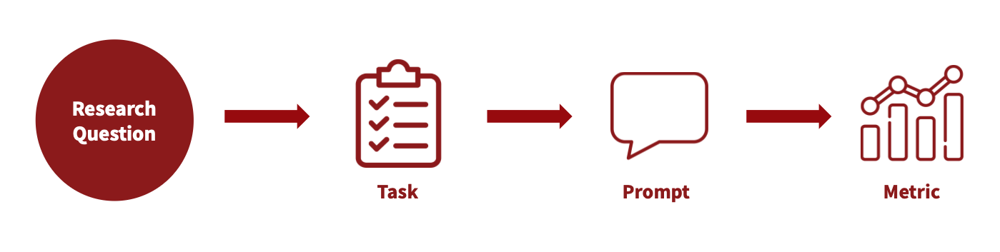
Research Question
The research question anchors the entire framework. Everything downstream (what you extract, how you prompt, how you score) should trace back to it.
In our pipeline
How did historical TV programming vary across channels and time periods?
Task
A task translates the research question into a concrete extraction operation. One research question may require several tasks; each should be narrow enough to prompt clearly and score objectively.
In our pipeline
We have newspaper TV guides that list historical programming by date, channel, and time. As a first step, we should extract the name of the first channel from each TV guide.
Prompt
The prompt translates the task into explicit, machine-readable instructions. Precision matters: a vague prompt doesn't just produce inconsistent outputs, it makes it harder to diagnose whether poor results reflect a model limitation or an underspecified instruction.
In our pipeline
Analyze the provided image of a TV schedule grid from a newspaper. Each row represents one channel. The leftmost or rightmost area of each row contains the channel information. Extract the channel information from ONLY the first data row of the grid (the first row immediately after the time-slot or any other subsection headers).
Metric
The metric defines what counts as a correct answer and measures how close an output is to the ground truth.
In our pipeline
Word Intersection over Union (IoU): the fraction of words two strings share.
When both the output and the ground truth are short phrases, Word IoU is a good choice for measuring how much they overlap. If the LLM outputs "Food Channel" but the ground truth is "Food Network", the Word IoU score is 0.33: the two strings share one word ("Food") out of three unique words total ("Food", "Channel", "Network").
The Feedback Loop
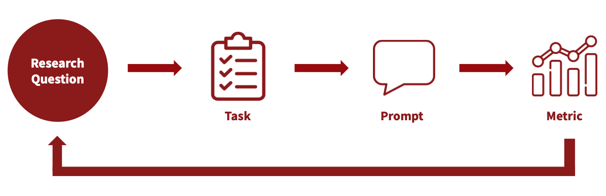
In practice, this framework is iterative, not linear. Poor scores are a diagnostic signal, not just a verdict on the model. Trace back through the framework to find where alignment broke down:
- Are your tasks reflective of your research question and the data you have to work with?
- Does your prompt properly explain what you want the LLM to do?
- Is your metric appropriate for what the prompt is actually asking?
In our pipeline, a one-sentence prompt returned poor results; iterating on it significantly improved performance across models.
Executing at Scale
Our initial project pipeline scaled quickly (18 models, 35 images, 6 benchmarks) with nearly 3,800 task combinations per iteration. To handle this volume efficiently, we built the following pipeline:
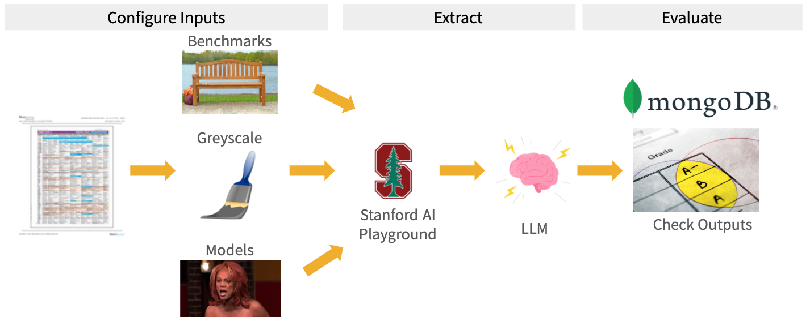
After configuring our inputs (benchmarks, models, and images) and converting PDFs to grayscale PNGs, we accessed models through the Stanford AI API Gateway. Stanford provides access through a Stanford-managed environment with vendor agreements covering data use, retention, and model training; data is not used to train vendor models. The Stanford AI API Gateway allowed us to get outputs from models without the need for a web interface.
Stanford AI API Gateway
Models are continuously deprecated and added to the Gateway. You must reapply for a new key each time the list of available models changes in order to keep your access up to date.
Outputs and benchmark evaluation results were stored in MongoDB, our centralized database with the following schema:
| Field | Type | Example | Notes |
|---|---|---|---|
_id |
string | "3023_2_processed" |
Primary key that captures the task ID and run ID of a successful LLM output |
benchmark_id |
string | "2" |
Unique integer identifier for the prompt |
benchmark_name |
string | "newspaper_date" |
Unique name identifier for the prompt |
completion_tokens |
integer | 15 |
Token usage associated with the LLM output |
error |
string | null |
Error message if the LLM was not able to return an output |
image_id |
string | "1" |
Unique integer identifier for the image used |
model_id |
string | "1" |
Unique integer identifier for the LLM |
model_name |
string | "Llama-4" |
Unique name identifier for the LLM |
output |
string | "Sun, Nov 16, 1997" |
Output from the LLM |
run_id |
integer | 1 |
The ith iteration of a given task |
status |
string | "processed" |
processed if the LLM returned an output without error, otherwise unprocessed |
task_id |
string | "2416" |
Unique ID associated with the combination of benchmark, image, and model |
total_tokens |
integer | 4000 |
Token usage across the input prompt, LLM output, and the model's thinking tokens (reasoning models only) |
updated_at |
datetime | 2026-04-08 15:45:50 |
Time when the LLM returned an output |
Storing results lets you compare across prompt versions and models: did a new prompt (a new benchmark_id) do better or worse than the last version? Did switching models (model_id) cause a regression on a benchmark that was previously working? Repeated iterations of the same task are tracked separately by run_id, so you can also average over them to smooth out run-to-run variation. Without stored results, answering these questions means re-running everything from scratch.
We processed all tasks in a few hours using the Yen servers for compute and SLURM array jobs to process tasks in parallel.
In Practice: Iterating on Historical TV Guides
Here's how we applied this framework in practice.
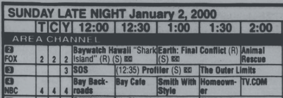
Selecting Benchmarks
We selected tasks with clear, verifiable answers and assigned each a difficulty level based on expected extraction challenge. We started with six benchmarks:
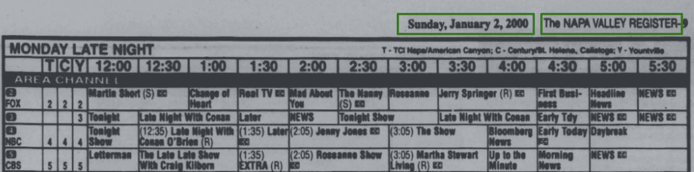
Easy (Green)
| Task | Description |
|---|---|
| Newspaper Name | Simple metadata extraction, similar locations across documents, relatively high resolution. |
| Newspaper Date | Simple metadata extraction, similar locations across documents, relatively high resolution. |
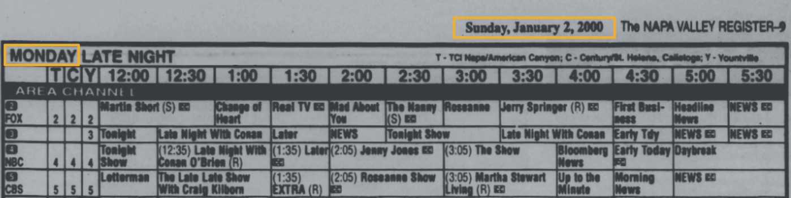
Medium (Yellow)
| Task | Description |
|---|---|
| TV Guide Day of Week | Varied location, mixed resolution, data found in the TV Guide grid. |
| TV Guide Date | Reasoning: answer is derived by combining both Newspaper Date and TV Guide Day of Week without being explicitly prompted. |
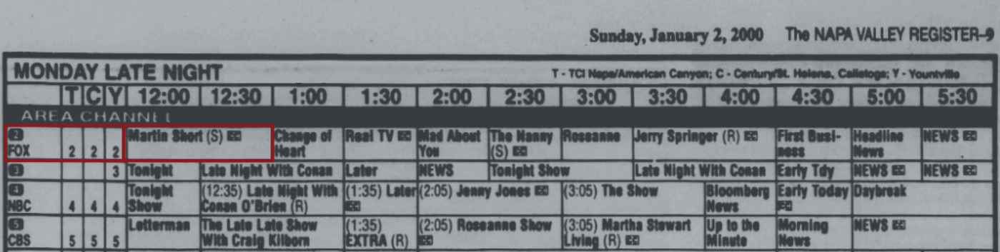
Hard (Red)
| Task | Description |
|---|---|
| First Channel | Data found within grid, smallest font, lowest resolution, variability (color, placement, size). |
| First Program | Data found within grid, smallest font, lowest resolution, variability (color, placement, size). |
Challenges with "Ground Truth"
Defining ground truth (the correct answer you score an LLM output against) is harder than it sounds. In our dataset, what counted as the right answer depended heavily on the specific research question and the variability in the data itself.
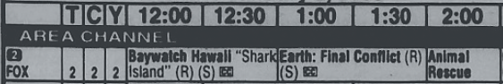
To better illustrate this challenge, when asking an LLM to extract the "first program" from the above, what is the correct answer?
- A. Baywatch Hawaii "Shark Island" (R) (S) (cc)
- B. Baywatch Hawaii "Shark Island"
- C. Baywatch Hawaii
The so-called "right" answer depends on what your prompt is actually asking for — and it can change as your prompt evolves. In our pipeline, we maintained separate ground truth sets for each task and prompt version to ensure our metric always matched what we were asking the model to do.
Transcribe a few images by hand first
Hand transcribing 5 to 10 images yourself can be enormously helpful in understanding the data that is available and how much variability you might be dealing with.
Updating Prompts
With ground truth defined, our scores became the signal for iteration. One benchmark that models initially struggled with was extracting the first program name — the hardest task in the set, with small font, low resolution, and significant variability across guides.
We adjusted our prompt several times to see if we could get better results. You can see the prompts we used below and how each model performed across all images. The model with the best performance across each prompt is highlighted in red.
Short, one sentence prompt.
Return the name of the program for the first channel listed and for the earliest time slot shown.
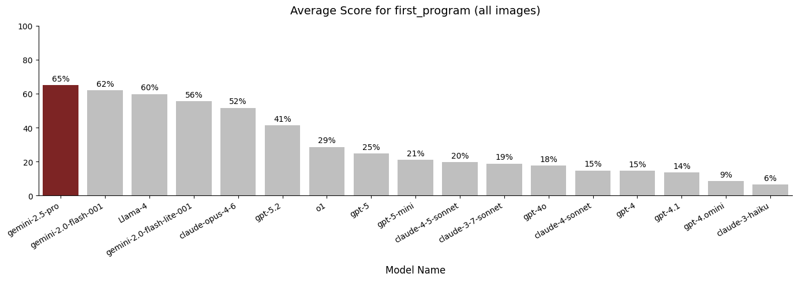
Added explicit grid structure and step-by-step navigation instructions.
Analyze the provided image of a TV schedule grid. Channels are typically listed vertically (rows) and time slots horizontally (columns). Your task is to extract the program title for the FIRST channel listed at the EARLIEST time slot shown. Follow these steps carefully: 1. Scan the grid to identify the top-most row containing programming data (the row immediately below the time-slot or any other subsection headers). 2. Scan to the left-most time block within that specific row. 3. Identify the text inside this top-leftmost program block. 4. Transcribe the text exactly as printed. Include all numbers (e.g., episode numbers, parts, movie years), abbreviations, and characters that appear immediately with the title.
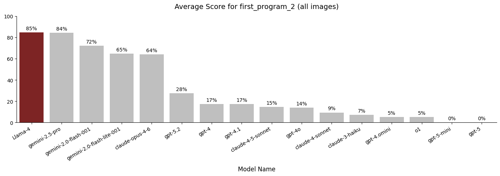
Narrowed the output to the title only, filtering out metadata like captions and codes.
Analyze the provided image of a TV schedule grid. Channels are typically listed vertically (rows) and time slots horizontally (columns). Your task is to extract the program title for the FIRST channel listed at the EARLIEST time slot shown. Follow these steps carefully: 1. Scan the grid to identify the top-most row containing programming data (the row immediately below the time-slot or any other subsection headers). 2. Scan to the left-most time block within that specific row. 3. Identify the text inside this top-leftmost program block. 4. Return only the title, ignore all closed captioning markers, rerun indicators, movie release years, or VCR Plus+ codes (numeric sequences) that appear immediately with the title.
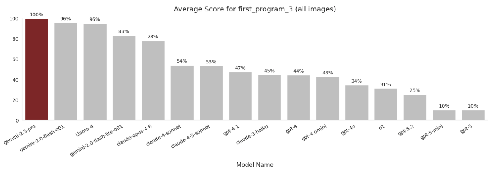
How Models Behave When Uncertain
All models were given the same system prompt for First Program v2 and First Program v3:
You are a precise OCR assistant specialized in extracting structured data from historical American newspaper TV guide grids. These are dense, low-resolution scans with small fonts, abbreviations, and tightly packed columns. Extract only text that is visibly present. Never guess, infer, or autocomplete. If a specific piece of information is illegible or missing, return null.
Under fuzzy matching (scoring partial overlap rather than requiring an exact match), even a hallucination produces some character overlap and scores above zero — so an exact 0% means the model returned null rather than any answer at all. That is exactly what happened with gpt-5 and gpt-5-mini.
According to the GPT-5 system card, GPT-5 models were tuned to abstain from answering at a higher rate than earlier models when data is missing or hard to read. On this prompt version, gpt-5 and gpt-5-mini consistently abstained when the target text was too small or low-resolution to read confidently — in effect, correctly following the "never guess" instruction. Our scoring, however, penalized that as a flat 0%.
Some of the other models behaved differently: once they hit the same uncertainty threshold (poor resolution, small font), they guessed anyway rather than abstaining. Those guesses produced hallucinated answers, which is what drove their accuracy down.
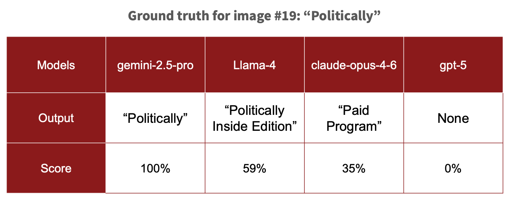
Results
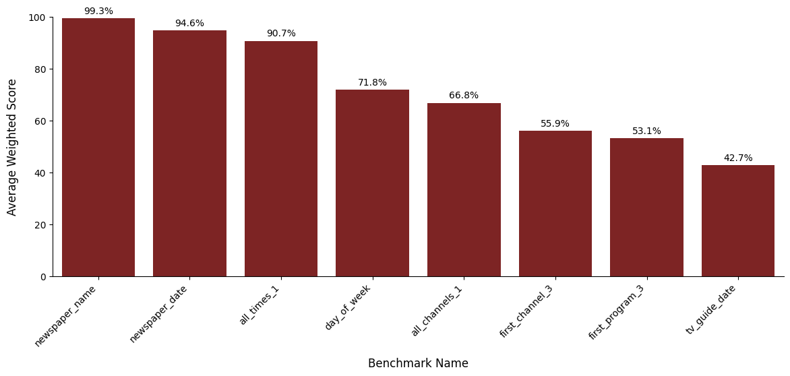
Our best performing benchmarks were easy metadata tasks like newspaper name and newspaper date, which scored 99% and 95% respectively.
The worst performing benchmark was TV Guide Date with an overall score of 42.7%. Low scores were indicative of vague prompting and additional complexity from reasoning compared to other data extraction benchmarks.
We added benchmarks "all times" and "all channels" to evaluate how well the models did on extracting larger arrays of information.
Looking across all benchmarks, the model leaderboard for accuracy averaged across all tasks was:
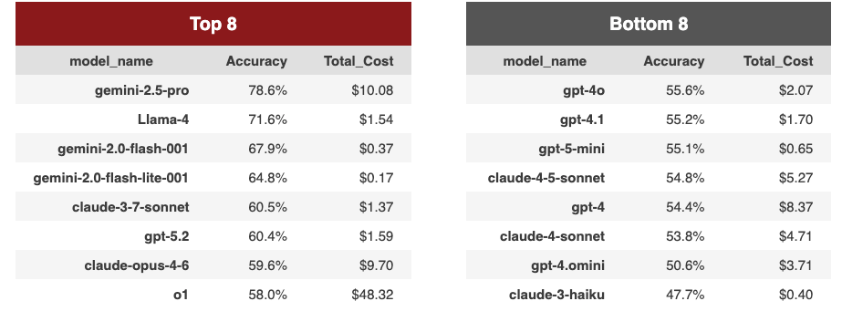
Gemini-2.5-pro topped the leaderboard at 78.6% overall while claude-3-haiku could only produce accurate results 48% of the time. Notably, our most expensive model was o1, which cost almost 5x more than gemini-2.5-pro but had an accuracy of 58%.
Temperature and Reasoning Models
Accuracy Rates Across Runs
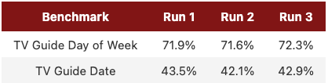
Temperature is a setting that controls how much randomness a model introduces when generating its response: higher values produce more varied output, while temperature=0 makes it as predictable as the model allows. We set it to 0 for all models so that, in principle, the same prompt on the same image should produce the same output every time. Even after doing so, however, we noticed variation in outputs which was reflected in the accuracy rate per run. To account for this we would recommend running the same task multiple times and taking the average of the metrics.
Reasoning
Some models also support a reasoning effort parameter that controls how much internal chain-of-thought the model performs before responding; however, this setting is not consistently available across all models in the Stanford AI API Gateway, so we used each model's default.
One benchmark where reasoning capability genuinely mattered was TV Guide Date: unlike the other tasks, the correct date isn't printed explicitly anywhere in the grid. Instead, the model must derive it by combining the newspaper's publication date (from the fixed header) with the day of week label in the TV guide. Tasks like this, which require inference rather than direct transcription, are where tuning reasoning effort (or choosing a reasoning-optimized model) is most likely to pay off.
Cost
One practical question for any researcher considering this approach: how much does it actually cost to run?
| Total Cost | Total Tasks (All Runs) | Cost / Task |
|---|---|---|
| $106.06 | 11,138 | $0.0095 |
Running the entire evaluation pipeline multiple times (approx. 11,100 tasks) cost $106.06. We noticed that simple metadata extraction tasks tended to be cheaper ($0.006/task) while more complex tasks that required lengthy prompts, larger outputs, and/or more reasoning drove up costs.
Context Windows
Context window limits are another factor to watch. A model's context limit bounds both its input (system prompts, user prompts, and images) and its output. Input limits range widely, from 95K (gpt-4.1) to 1M tokens (gemini-2.5-pro). They also depend on how a model is served: our 95K figure for gpt-4.1 reflects its Azure deployment via the Gateway, not the model's native window. And because these limits shift as models update, it's worth checking the latest figures before running your pipeline.
Some of our original color PNGs exceeded these limits, so we converted them to grayscale to shrink their input size and test more models on each image. Preprocessing like this (adjusting color scale or resolution) helps when you hit context limits, but it can also make inputs harder for models to parse accurately.
Output limits weren't an issue for us, since our largest outputs were short arrays of strings. If you need models to produce more than that, keep those limits in mind too.
Takeaways
Building a benchmark was less about finding the one "right" model and more about setting up a process we could keep refining as our questions, data, and the available models change. A few lessons stood out from our work:
-
Start with your research question
Good results depend first on a well-defined research question and a clear understanding of our data's variability. Tasks, prompts, and metrics all follow from there; getting that foundation right is what separates a useful benchmark from one that just produces numbers.
-
Treat it as an iterative process
A benchmark has many knobs to turn — the prompt, the metric, the ground truth, and the choice of model — and the first setting is rarely the best one. Prompting carried a lot of weight: on our hardest task, rewriting a single-sentence prompt into explicit, step-by-step instructions lifted scores significantly for our best model. Treat early results as a diagnostic signal, not a final verdict, and expect to loop back a few times before things click.
-
Build once, reuse easily
The pipeline processed nearly 3,800 tasks in a few hours by running jobs in parallel. Because the models, benchmarks, and images are defined in configuration files rather than hard-coded into the pipeline, the cost of change is low. When a new model is released, we add it to the config and point the pipeline at it — there's no pipeline code to rewrite and no need to re-run the models we've already evaluated. We still have to run the evaluations for the new model itself, but everything around it is reused. The same is true for a new prompt, a new task, or a fresh batch of documents.